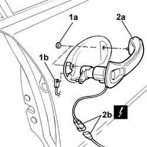

7005C10 Front door OUTER HANDLE - R.R. with door panel removed
- Path
- Procedures > 70 FITTINGS > 7005 passenger compartment front side doors > 7005C front door lock controls > 7005C10 Front door OUTER HANDLE - R.R. with door panel removed
- Kind
- repair procedure (removal / refitting; the operation number is the code)
- Applies to
- all engines; all production periods
- Interactive page
- https://sloeber94.github.io/elrnDB-lThss/en/#/109087
Applies to: all engines; all production periods
 Removing
Removing
 Refitting
RefittingSee in Op. 7005A04 Front side door WATER GUARD PROTECTION -R R. or Postion with door panel removed
1. Undo the fixing nuts (1a) and disconnect the door opening/closing idler (1b) from the pawl.
2. Remove the handle (2a) from the housing and disconnect the electrical connector (2b).
 | Description | Connector |
|---|---|---|
2b | Switch on driver's exterior handle | I022 |
| Description | Connector |
|---|---|---|
2b | Switch on passenger side exterior handle | I023 |

Applies to: all engines; all production periods
Refitting
Removing- Connect the electrical connector and place the handle in position.
| Description | Connector |
|---|---|---|
. | Switch on driver's exterior handle | I022 |
| Description | Connector |
|---|---|---|
. | Switch on passenger side exterior handle | I023 |
- Connect the door opening/closing idler to the pawl and tighten the nuts fixing the handle.
- Check that the outer handle is working properly.
See in Op. 7005A04 Front side door WATER GUARD PROTECTION -R R. or Postion with door panel removed
Topics linked from this page (1)
Topics that link to this page (5)
- P42 (ONE) DOOR DOES NOT OPEN (vehicle with Passive Entry)
- 7005C11 Front side door EXTERIOR HANDLE - R.R.
- 7005C15 Front side door LOCK BARREL (in handle) - R.R.
- 7005C56 Front door opening device (one), left or right, complete with rod lock - R.R. with door panel removed
- 7005C57 Front door opening device (one), left or right, complete with rod lock - R.R.